KedaiPOS — Sistem Jualan
Cara Membuat Pesanan dan Menerima Bayaran
Versi 1.0
Kemas kini 17 Ogos 2026
KedaiPOS ialah sistem jualan (Point of Sale) untuk kedai makan. Sistem ini membolehkan juruwang menerima pesanan, memilih variasi makanan seperti jenis lauk dan saiz minuman, mengira cukai dan diskaun, menerima bayaran tunai, serta mencetak resit.
Panduan ini menerangkan proses lengkap dari memilih menu sehingga bayaran selesai. Setiap langkah disertakan gambar skrin sebenar daripada sistem.
http://localhost/claude-learn1/Skrin utama terbahagi kepada tiga bahagian:
| Bahagian | Lokasi | Fungsi |
|---|---|---|
| Bar Atas | Paling atas | Papar jam semasa, butang Variasi dan butang Sejarah |
| Panel Produk | Kiri (besar) | Medan carian, butang kategori, dan senarai kad produk |
| Panel Troli | Kanan | Senarai pesanan semasa, subjumlah, cukai, diskaun, jumlah dan butang Bayar |
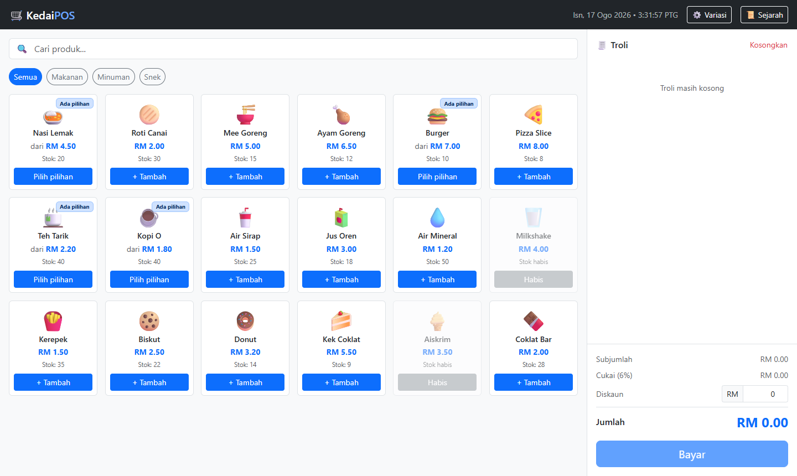
dari RM x.xx jika produk mempunyai pilihan variasiBuka pelayar web dan layari alamat sistem. Skrin utama akan memaparkan semua produk yang tersedia. Troli bermula dalam keadaan kosong dengan mesej "Troli masih kosong".
Untuk mempercepat pencarian, tekan butang kategori di bawah medan carian: Semua, Makanan, Minuman, atau Snek.
Contoh di bawah menunjukkan kategori Minuman dipilih — hanya produk minuman dipaparkan.
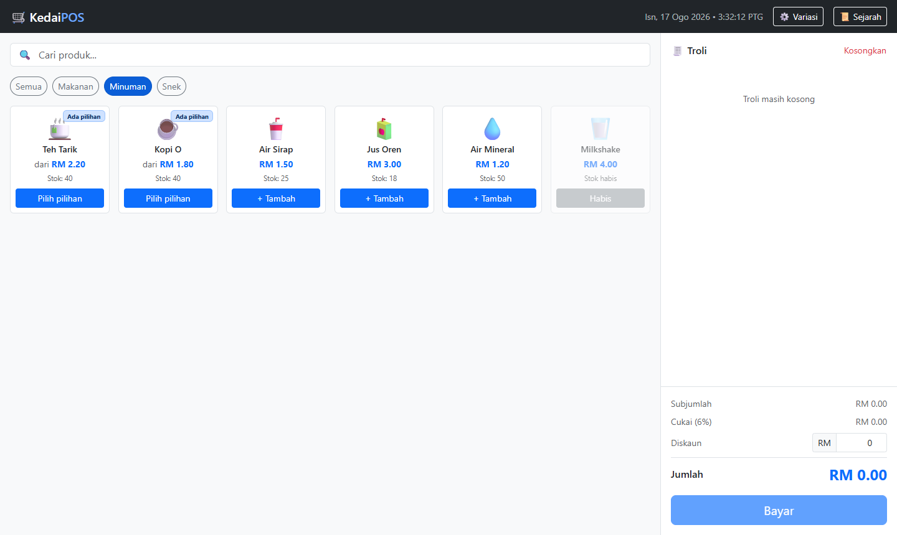
Tekan Semua untuk kembali memaparkan keseluruhan menu.
Jika menu terlalu banyak, taip nama produk dalam medan Cari produk... di bahagian atas. Senarai akan ditapis secara langsung semasa anda menaip.
Contoh: menaip nasi memaparkan hanya produk Nasi Lemak.
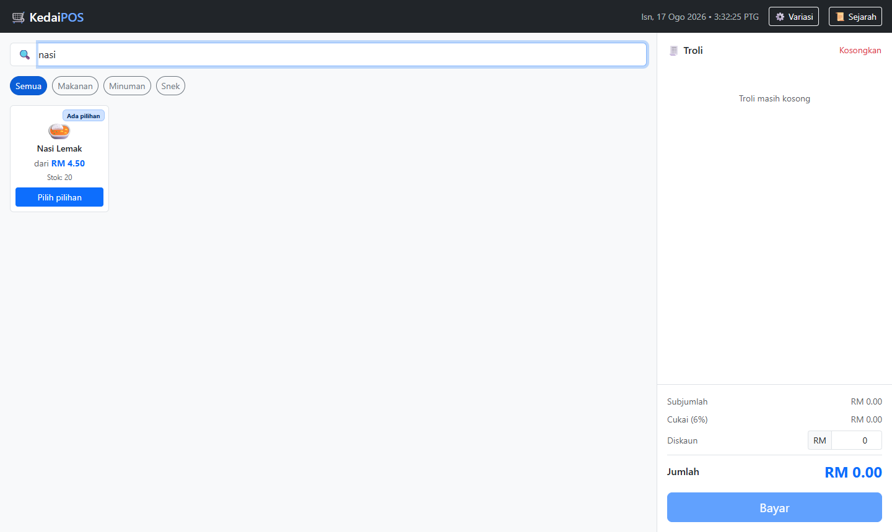
Kosongkan medan carian untuk memaparkan semula semua produk.
Produk tanpa variasi memaparkan butang + Tambah. Cukup tekan kad produk sekali dan item terus masuk ke troli.
Contoh: menekan Roti Canai menambah satu unit pada harga RM 2.00.
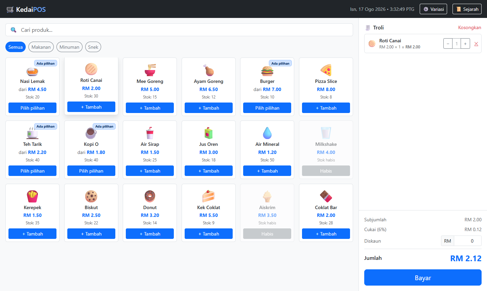
Produk yang mempunyai label Ada pilihan memaparkan butang Pilih pilihan. Menekan kad produk ini akan membuka tetingkap variasi.
Contoh: menekan Nasi Lemak membuka tetingkap dengan tiga kumpulan pilihan — Lauk, Kepedasan, dan Tambahan.
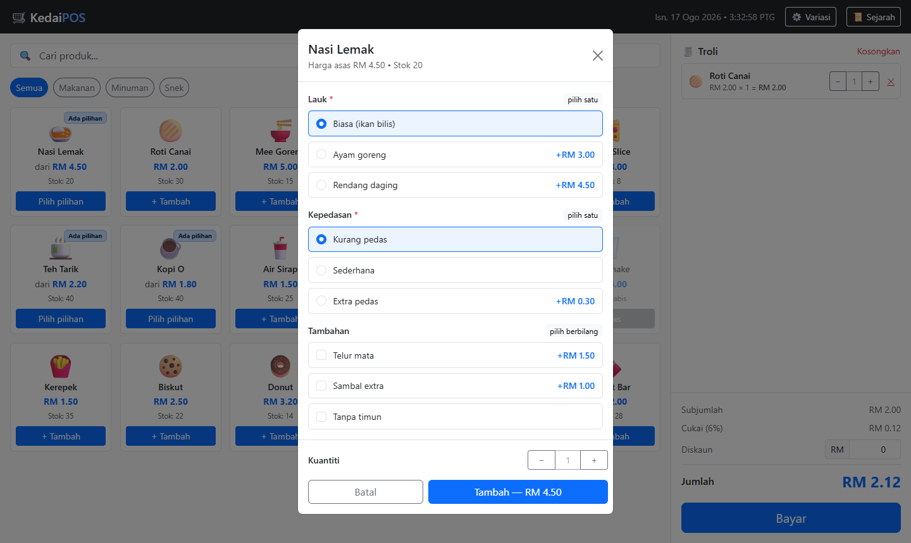
| Tanda | Maksud |
|---|---|
| * | Kumpulan wajib — mesti dipilih sebelum boleh tambah |
pilih satu | Hanya satu pilihan dibenarkan (butang bulat) |
pilih berbilang | Boleh pilih lebih daripada satu (kotak semak) |
+RM 3.00 | Harga tambahan bagi pilihan tersebut |
−RM 0.20 | Potongan harga bagi pilihan tersebut |
Tekan pilihan yang dikehendaki. Pilihan yang aktif akan bertukar warna biru, dan harga pada butang Tambah di bahagian bawah dikemas kini serta-merta.
Contoh pilihan: Ayam goreng (+RM 3.00), Extra pedas (+RM 0.30), dan Telur mata (+RM 1.50).
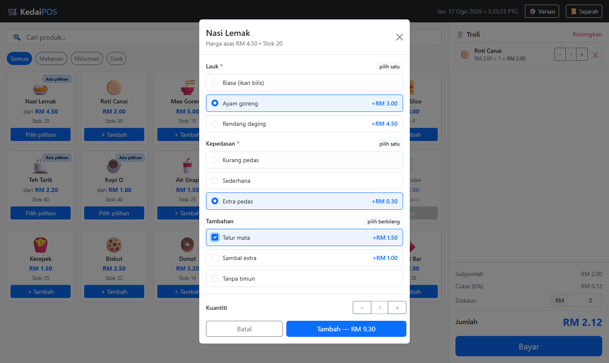
Harga asas RM 4.50 Ayam goreng + RM 3.00 Extra pedas + RM 0.30 Telur mata + RM 1.50 ───────────────────────── Harga seunit RM 9.30
Di bahagian bawah tetingkap variasi terdapat kawalan Kuantiti. Tekan + untuk menambah atau − untuk mengurangkan sebelum memasukkan item ke troli.
Contoh: kuantiti ditetapkan kepada 2, menjadikan jumlah RM 18.60 (RM 9.30 × 2).
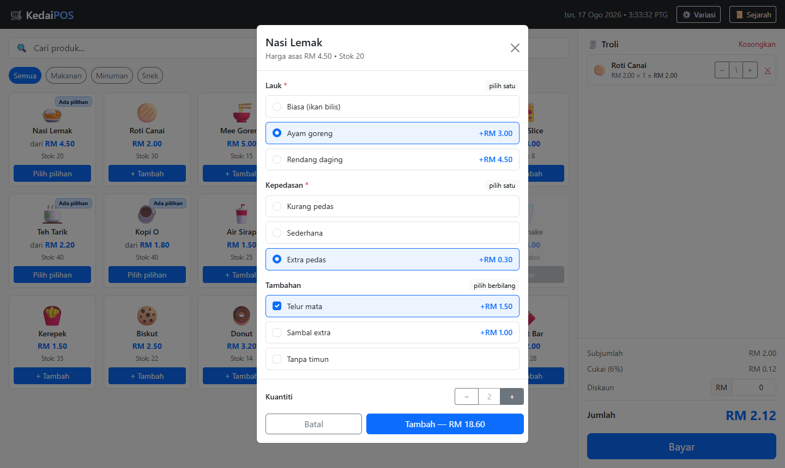
Tekan butang biru Tambah — RM 18.60 untuk memasukkan ke troli. Tekan Batal jika ingin membatalkan.
Setiap item yang ditambah muncul di panel troli sebelah kanan. Bagi item bervariasi, pilihan dipaparkan dalam tulisan condong di bawah nama produk.
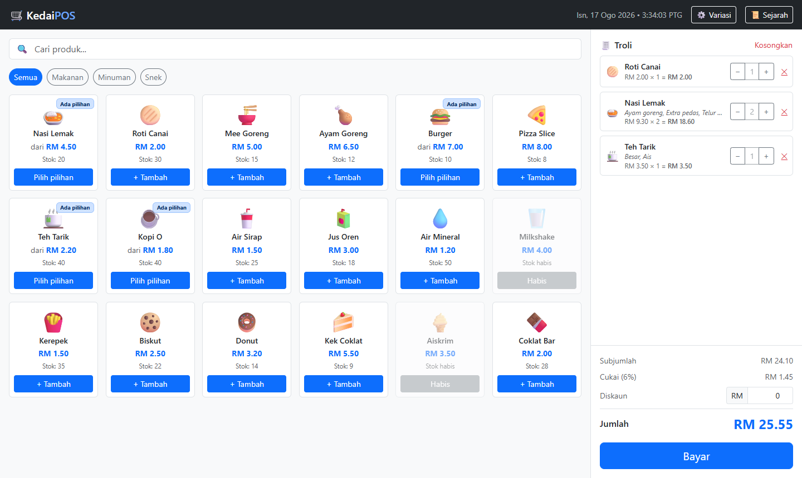
Panel bawah troli memaparkan pengiraan automatik:
Pada setiap baris troli terdapat tiga kawalan:
| Butang | Fungsi |
|---|---|
| − | Kurangkan kuantiti sebanyak satu |
| + | Tambah kuantiti sebanyak satu |
| ✕ | Buang item tersebut terus dari troli |
Contoh: kuantiti Roti Canai dinaikkan kepada 2, menjadikan RM 4.00.
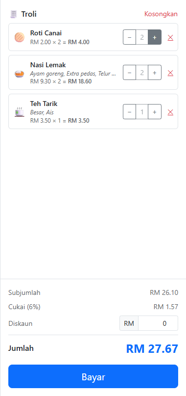
Untuk mengosongkan keseluruhan troli, tekan pautan merah Kosongkan di penjuru kanan atas panel troli.
Jika pelanggan layak mendapat potongan, taip amaun dalam medan Diskaun (dalam Ringgit). Jumlah akhir dikemas kini secara langsung.
Contoh: diskaun RM 2.50 menurunkan jumlah daripada RM 27.67 kepada RM 25.17.
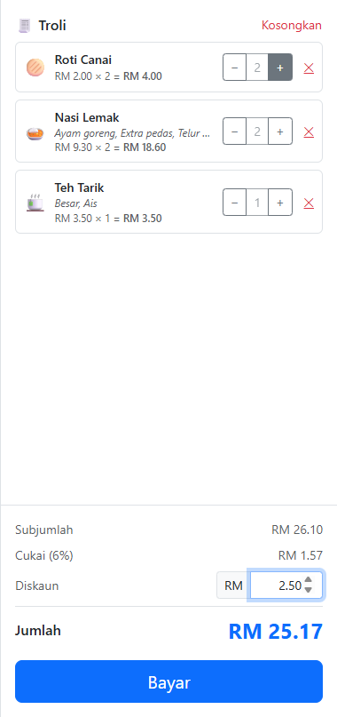
Jumlah = Subjumlah + Cukai (6%) − Diskaun
= RM 26.10 + RM 1.57 − RM 2.50
= RM 25.17
Biarkan medan diskaun pada 0 jika tiada potongan.
Setelah pesanan lengkap, tekan butang biru Bayar di bahagian bawah troli. Tetingkap pembayaran akan terbuka dan memaparkan Jumlah Perlu Dibayar.
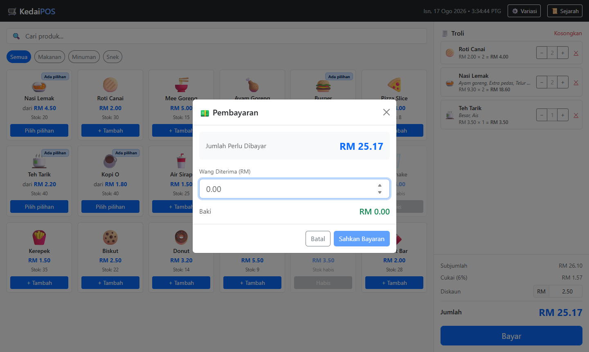
Taip amaun tunai yang diterima daripada pelanggan dalam medan Wang Diterima (RM). Baki akan dikira secara automatik dan dipapar dalam warna hijau.
Contoh: pelanggan membayar RM 30.00 bagi jumlah RM 25.17, maka baki ialah RM 4.83.
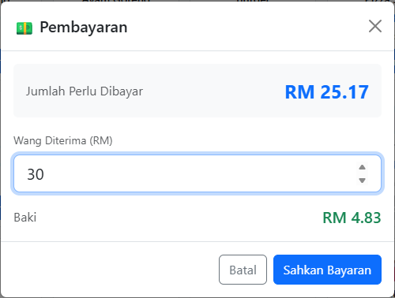
Tekan Sahkan Bayaran. Resit rasmi akan dipaparkan dengan maklumat penuh transaksi.
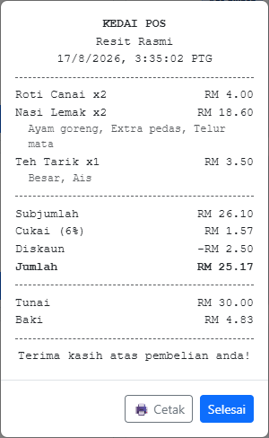
Resit mengandungi:
0Tekan butang 📜 Sejarah pada bar atas untuk melihat rekod jualan yang lepas.
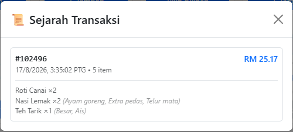
Setiap rekod memaparkan nombor rujukan transaksi, jumlah bayaran, tarikh dan masa, bilangan item, serta senarai ringkas item berserta variasinya.
| Situasi | Tindakan |
|---|---|
| Pelanggan tukar fikiran pasal satu item | Tekan ✕ pada baris item tersebut |
| Pelanggan batalkan keseluruhan pesanan | Tekan Kosongkan di atas panel troli |
| Nak tambah item sama dengan variasi berbeza | Tekan kad produk semula dan pilih variasi baharu |
| Nak cari produk dengan pantas | Taip dalam medan carian, jangan skrol |
| Tersalah masuk amaun tunai | Padam dan taip semula — baki dikira semula automatik |
| Nak batalkan sebelum sahkan bayaran | Tekan Batal pada tetingkap pembayaran |
Troli masih kosong. Tambah sekurang-kurangnya satu item terlebih dahulu.
Ada kumpulan wajib (bertanda *) yang belum dipilih. Semak kumpulan seperti
Lauk atau Saiz dan pastikan satu pilihan telah dibuat.
Stok produk tersebut telah habis. Kad akan memaparkan label Habis.
Wang yang dimasukkan kurang daripada jumlah perlu dibayar. Semak semula amaun tunai.
Sejarah disimpan dalam storan setempat pelayar. Membersihkan data pelayar akan memadamkan rekod tersebut.
Dokumen ini dijana secara automatik menggunakan Playwright. Semua gambar skrin diambil daripada sistem yang sedang berjalan.